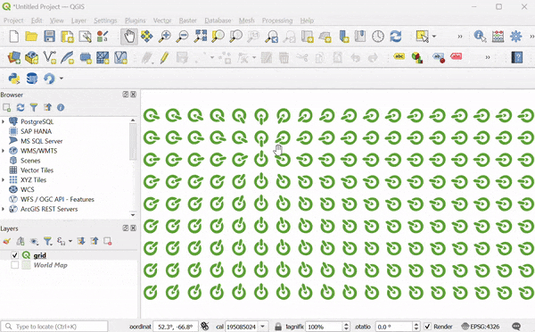
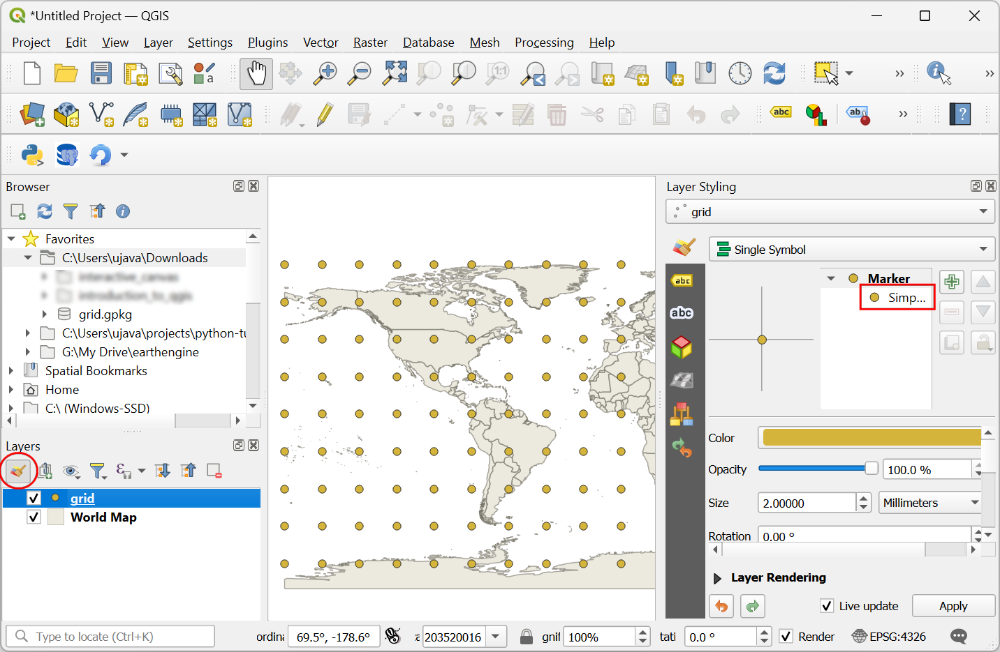

Ujaval Gandhi
Ujaval GandhiCreación de mapas interactivos en lienzo (QGIS3)¶
Este tutorial muestra cómo hacer que los objetos espaciales se actualicen dinámicamente al mover el cursor en el lienzo de QGIS. Implementaremos el cepillado del lienzo usando expresiones para hacer que los objetos espaciales respondan al movimiento del cursor.
Visión general de la tarea¶
Crearemos una cuadrícula de iconos QGIS y aplicaremos un cambio definido por datos para la rotación de iconos para hacer que los iconos sigan el movimiento del cursor.
Procedimiento¶
1. We will start by creating a grid. To make our grid with global extents, we can load the world map on the canvas. You can type world in the coordinates box at the bottom of the QGIS window and press Enter.
This is one of the several hidden easter eggs in QGIS. You can discover other easter eggs on our YouTube Channel.

Se añadirá una nueva capa
World Mapal panel Capas de QGIS. Vaya a .

Busque y localice el algoritmo . Haga doble clic para abrirlo.

En el cuadro de diálogo Crear cuadrícula, haga clic en el menú desplegable .

A continuación, ajuste el Espaciado horizontal y el Espaciado vertical a
20grados. Haga clic en el botón...situado junto a Cuadrícula y seleccione Guardar en archivo. Busque una carpeta en su ordenador e introduzca el nombregrid.gpkg. Pulse Ejecutar.

Se añadirá una nueva capa
grid. Haga clic en el botón Abrir el panel de estilo de capas del panel Capas. Haga clic en la etiqueta Marcador simple.

En el menú desplegable, seleccione
Marcador SVGcomo tipo de símbolo.

Desplácese hasta la sección Navegador SVG y seleccione la carpeta logos. Seleccione el icono QGIS.

Desplácese hasta la opción Tamaño y ajuste el tamaño a
5.

A continuación, localice la opción Rotación y haga clic en el botón Cambio definido por datos. Seleccione Editar….

Añadiremos una expresión que calculará dinámicamente la rotación del icono basándose en la posición actual del cursor. Como nuestro icono está apuntando a 135° de acimut, esta será la rotación 0. A medida que el cursor se mueva, la expresión calculará el ángulo acimutal entre el icono y la posición del cursor y calculará el ángulo que debe girar para apuntar al cursor. Introduzca la siguiente expresión y pulse Aceptar.
degrees(azimuth(@geometry, @canvas_cursor_point)) - 135
El lienzo del mapa aún no responde al movimiento del cursor porque no se actualiza a menos que muevas el mapa. Hagamos que se actualice automáticamente. Haz clic con el botón derecho en la capa
gridy selecciona Propiedades.

Cambie a la pestaña Renderizado. Desplácese hacia abajo y marque la casilla Refrescar capa a intervalos. Ajuste el intervalo a un número pequeño como
0.1(es decir, 100ms) y haga clic en Aceptar.

De vuelta a la ventana principal, desactiva la capa
Mapa del Mundo. Ahora, al mover el cursor, todos los iconos rotarán para apuntar hacia tu posición actual.

Este divertido ejercicio fue diseñado para ayudarte a entender cómo usar la variable @canvas_cursor_point para hacer capas dinámicas que respondan al movimiento del ratón.
If you want to give feedback or share your experience with this tutorial, please comment below. (requires GitHub account)